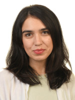

Meet the researchers and specialists working across X-ray imaging, computed tomography, image analysis, and materials characterization.
Our multidisciplinary team combines expertise in imaging, materials science, engineering, data processing, and quantitative analysis.
Short description of research interests and responsibilities.
Short description of research interests and responsibilities.

Ekaterina is a PhD student with a background in archaeological sciences, specializing in the scientific study and conservation of cultural heritage materials. Her current research focuses on the optimization and characterization of sustainable materials for cultural heritage conservation, particularly for injection and additive manufacturing applications. She uses X-ray computed tomography as a non-destructive, quantitative technique to investigate internal structure, porosity, cracking, and material behaviour. Her research interests include archaeological and heritage materials, advanced X-ray characterization, 3D imaging, sustainable conservation, and additive manufacturing for the restoration of cultural heritage objects.